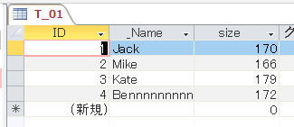
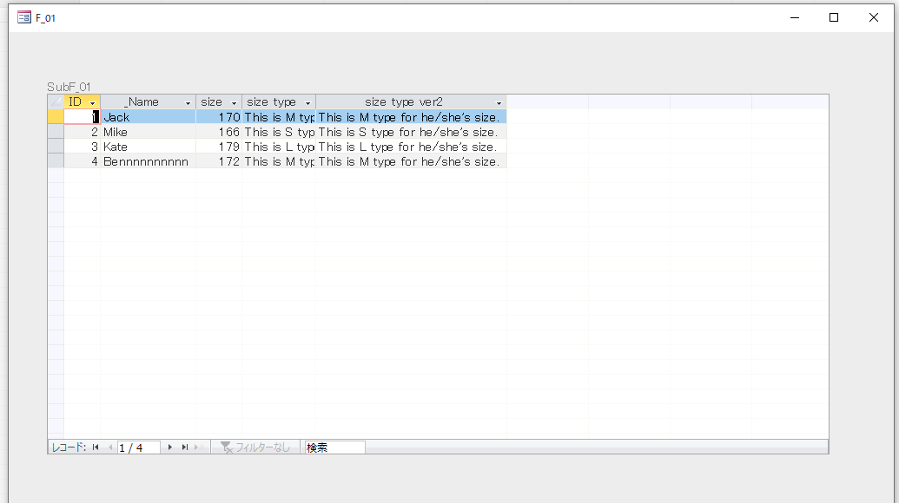
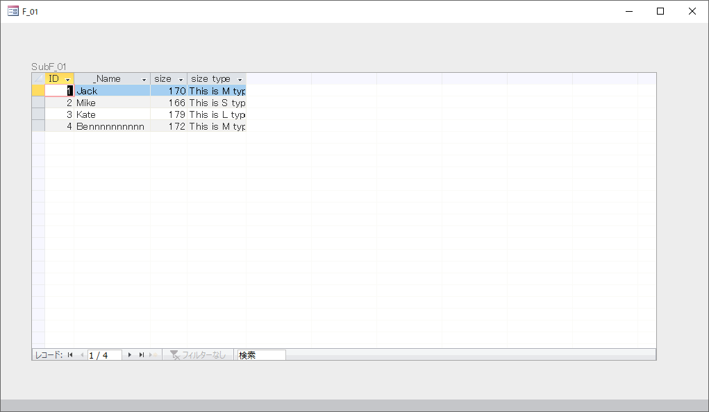
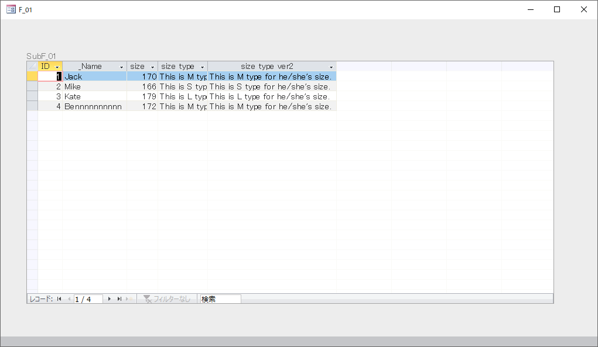

[Access VBA] コントロールソースにユーザ定義関数を用いると列幅の自動調整が想定通りに機能しない問題の解決
Overview
この記事について
Accessでフォーム（データシート型）を使用する際、 テキストボックスのコントロールソースとして文字列を返すユーザ定義関数を指定すると、 フォームの列幅の自動調整の動作が想定通りにならない問題がある。
例えば、ユーザ定義関数で長い文字列を取得すると、文字列がフィールドに収まりきらず見切れてしまう。
その解決策を模索した。
要約
ユーザ定義関数の呼び出しタイミングが FormのResizeプロシージャよりも後であるため、 対象のテキストボックスに関しては、
1Private Sub Form_Resize()
2
3 '...code
4
5 ctl.ColumnWidth = -2
6
7 '...code
8
9End Sub
による自動調整が機能しない。
そのため、下記のいずれかの措置をとる。
- ユーザ定義関数の処理にControl.ColumnWidth = -2が追加された関数を作成する。
- Resizeする際に長さを明示的に指定。
本文
前提
このようなテーブルT_01がある。

T_01をサブフォームに組み込んで、このようなフォームF_01（およびサブフォームSubF_01）を表示する。

このとき、各列ID、_Name、sizeの列幅を自動で調整したい。
また、あたらしくsize typeテキスト列を追加し、
sizeの値ごとにS,M,Lのサイズ記号を示す文字列「This is ○ type for he/she's size.」を格納したい。
こちらの列幅も自動で調整したい。
環境
Microsoft Access 2019
実装
サブフォームのResizeプロシージャで
各々のテキストボックスに対して
列幅を指定した。
コントロールのColumnWidthの値を-2と指定することで列幅が自動調整される。
1'******************************************************************************************
2'*関数名 ：リサイズ
3'*機能 ：
4'*引数(1) ：
5'******************************************************************************************
6Private Sub Form_Resize()
7
8 '定数
9 Const FUNC_NAME As String = "Form_Resize"
10
11 '変数
12 Dim ctl As Access.Control
13
14 On Error GoTo ErrorHandler
15 '---以下に処理を記述---
16
17 For Each ctl In Me.Controls
18 If ctl.ControlType = acTextBox Then
19 ctl.ColumnWidth = -2
20 End If
21 Next
22
23ExitHandler:
24
25 Exit Sub
26
27ErrorHandler:
28
29 MsgBox "エラーが発生しましたのでマクロを終了します。" & _
30 vbLf & _
31 "関数名：" & FUNC_NAME & _
32 vbLf & _
33 "エラー番号：" & Err.Number & vbNewLine & _
34 Err.Description, vbCritical, Tool_Name
35
36 GoTo ExitHandler
37
38End Sub
また、size typeテキスト列については、
sizeの値の範囲ごとにS,M,Lのサイズ記号を分けたい。
そのため、
コントロールソースとして次の値を指定し、
ユーザ定義関数getSizeTypeを作成した。
1# コントロールソース式
2=getSizeType([size])
1'******************************************************************************************
2'*関数名 ：サイズ・タイプ取得
3'*機能 ：
4'*引数(1) ：サイズ数字
5'*戻り値 ：サイズ・タイプ
6'******************************************************************************************
7Public Function getSizeType(ByVal sizeNum As Long) As String
8
9 '定数
10 Const FUNC_NAME As String = "getSizeType"
11
12 '変数
13 Dim rtn As String
14
15 On Error GoTo ErrorHandler
16
17 getSizeType = ""
18
19 '～169 ：S
20 '170～175 ：M
21 '～176 ：L
22 Select Case True
23 Case sizeNum < 169
24 rtn = "This is S type for he/she's size."
25 Case 176 < sizeNum
26 rtn = "This is L type for he/she's size."
27 Case Else
28 rtn = "This is M type for he/she's size."
29 End Select
30
31 getSizeType = rtn
32
33ExitHandler:
34
35 Exit Function
36
37ErrorHandler:
38
39 MsgBox "エラーが発生しましたのでマクロを終了します。" & _
40 vbLf & _
41 "関数名：" & FUNC_NAME & _
42 vbLf & _
43 "エラー番号：" & Err.Number & vbNewLine & _
44 Err.Description, vbCritical, Tool_Name
45
46 GoTo ExitHandler
47
48End Function
トラブル
フィールドの見切れ
テーブルに既存のフィールドであるID、_Name、sizeについては
正常に列幅が調整されているが、
size type列については見切れが発生している。
文字列が長すぎるために、Form_Resize()で列幅が調整される想定であったが、
うまく機能していない。

関数の呼び出し順序
各関数に次のようにデバッグ出力を設定して
実行したところ、
関数の呼び出し順序は
①サブフォームForm_Resize → ②親フォームForm_Resize → ③getSizeType
であった
1Debug.Print FUNC_NAME
解決措置
①ユーザ定義関数の修正
Form_Resize()では対応できないため、
ユーザ定義関数の処理にControl.ColumnWidth = -2を追加する必要がある。
そのため、getSizeType()をラッピングする新しい関数getSizeTypeForSubF01Tb()を作成し、 比較のために別のコントロールソースを持つ新しいテキストボックスsize type ver2を作成した。
1# コントロールソース式
2=getSizeTypeForSubF01Tb([size],"txtSizeTypeVer2")
1'******************************************************************************************
2'*関数名 ：サイズ・タイプ取得 SubF01用
3'*機能 ：
4'*引数(1) ：サイズ数字
5'*引数(2) ：コントロール名
6'*戻り値 ：サイズ・タイプ
7'******************************************************************************************
8Public Function getSizeTypeForSubF01Tb(ByVal sizeNum As Long, ByVal ctlName As String) As String
9
10 '定数
11 Const FUNC_NAME As String = "getSizeTypeForSubF01Tb"
12
13 '変数
14 Dim rtn As String
15
16 On Error GoTo ErrorHandler
17
18 getSizeTypeForSubF01Tb = ""
19
20 rtn = Module_ManageFormControls.getSizeType(sizeNum)
21
22 '列幅を再設定
23 If SysCmd(acSysCmdGetObjectState, acForm, Form_F_01.Name) <> 0 Then Form_SubF_01.Controls(ctlName).ColumnWidth = -2
24
25 getSizeTypeForSubF01Tb = rtn
26
27ExitHandler:
28
29 Exit Function
30
31ErrorHandler:
32
33 MsgBox "エラーが発生しましたのでマクロを終了します。" & _
34 vbLf & _
35 "関数名：" & FUNC_NAME & _
36 vbLf & _
37 "エラー番号：" & Err.Number & vbNewLine & _
38 Err.Description, vbCritical, Tool_Name
39
40 GoTo ExitHandler
41
42End Function
結果、列幅の自動調整がsize type ver2についても機能するようになった。

②長さを明示的に指定
Form_Resize()について、
ループの後に一部のコントロール幅の数値をハードコーディングした。
1'******************************************************************************************
2'*関数名 ：リサイズ
3'*機能 ：
4'*引数(1) ：
5'******************************************************************************************
6Private Sub Form_Resize()
7
8 '定数
9 Const FUNC_NAME As String = "Form_Resize"
10
11 '変数
12 Dim ctl As Access.Control
13
14 On Error GoTo ErrorHandler
15 '---以下に処理を記述---
16
17 'ループ
18 For Each ctl In Me.Controls
19 If ctl.ControlType = acTextBox Then
20 ctl.ColumnWidth = -2
21 End If
22 Next
23
24 'size type ver2列の幅を明示的に指定（下記例では最低8cmの長さとなること）
25 if Me.txtSizeTypeVer2.ColumnWidth < 8 * 567 then Me.txtSizeTypeVer2.ColumnWidth = 8 * 567
26
27ExitHandler:
28
29 Exit Sub
30
31ErrorHandler:
32
33 MsgBox "エラーが発生しましたのでマクロを終了します。" & _
34 vbLf & _
35 "関数名：" & FUNC_NAME & _
36 vbLf & _
37 "エラー番号：" & Err.Number & vbNewLine & _
38 Err.Description, vbCritical, Tool_Name
39
40 GoTo ExitHandler
41
42End Sub
こちらについても、
列幅の自動調整がsize type ver2についても機能するようになった。
①および②の比較
①の方法は関数の数は増えないが、
長さをハードコードしているため、
getSizeTypeで返す文字列が変更した場合、メンテナンスの必要がある。
②の方法はすべての列幅を自動で調整できるが、
関数の数が増え、コントロールソースの処理が若干煩雑になる。